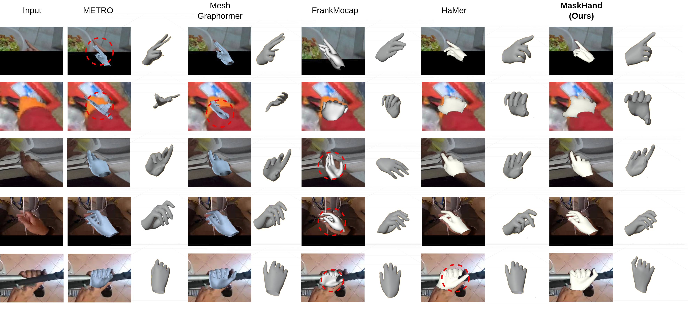
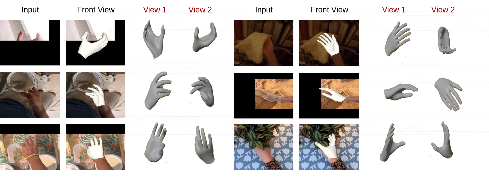

MMHMR: Generative Masked Modeling for Hand Mesh Recovery
anonymous
MMHMR DEMO
Our demo videos showcase MMHMR's ability to reconstruct highly accurate and realistic 3D hand meshes from single RGB images, overcoming challenges like complex articulations, self-occlusions, and depth ambiguities.
MMHMR Training
MMHMR Training Phase. MMHMR consists of two key components: (1) VQ-MANO, which encodes 3D hand poses into a sequence of discrete tokens within a latent space, and (2) a Context-Guided Masked Transformer that models the probabilistic distributions of these tokens, conditioned on the input image, 2D pose cues, and a partially masked token sequence.

MMHMR Inference

State-of-the-Art Comparison



HINT Benchmark: Challenging Poses in Wild


Visualizing Reference Keypoints and their Offsets


Mesh-Guided Control for Hand Image Generation